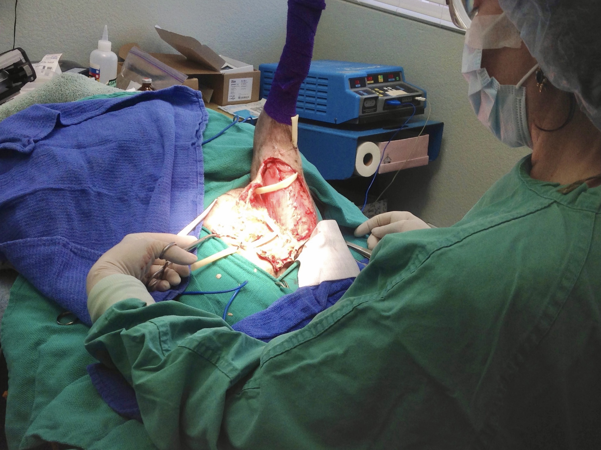

Our clinic has the latest medical equipment, pharmacy and in-house laboratory providing rapid test results.
Our consultants, board certified veterinary radiologists and veterinary surgeons, consult at our practice to provide their services on site if needed.
Wellness and Preventive Care
Annual Health Examination
Vaccination and Microchipping
Puppy and Kitten Packages
We have Puppy and Kitten Packages which includes 3 exams by the doctor typically at 9, 12 & 16 weeks of age for all core vaccines, 2 fecal tests for parasites, routine worming medications, and 2 months of heartworm & flea preventatives. Call for further information.
Health Certificates
Dr. Mandell is certified to provide Health Certificates and exams for both National and International Travel. Please note: Some states like Hawaii and many foreign countries have strict requirements, so we advise that you plan ahead for the requirements for each destination.
Flea & Tick Prevention; Heartworm Prevention
Flea & tick prevention is important for the health & safety of our pets & ourselves. These insects can transmit various diseases to humans as well. (Lyme disease, human tapeworm, blood diseases & Bartonella, to name a few). We have prescription preventatives including generics for your pet.
Geriatric Care and Internal Medicine
As your pet ages, his or her veterinary medical care needs change. Our pets are considered to be "senior" at 6 to 7 years of age.
The goal of our Senior Wellness Protocol is to prevent problems and diagnose diseases early, so that your pet can live a long, happy, and healthy life. We will specifically tailor diagnostic testing to screen for conditions that commonly develop in an older pet.
Because our pets tend to hide their symptoms from us, we recommend yearly to twice yearly Wellness Examinations, Blood work with Urinalysis and Diet Evaluation. Early detection is the key.
What you should know about Senior Wellness
Many of the diseases that cause these symptoms can be treated, controlled and possibly cured if detected early. Some Early Signs of Hidden Health Problems
- Any Decrease in Appetite
- Weight loss
- Vomiting and/or Diarrhea
- Drinking increased amounts of water
- Urinating larger volumes than normal
- Does not seem to "act like his/her normal self"
- Defecates or Urinates in an abnormal location
- Eats a lot, but continues to be thin & lose weight
- Tires more easily on walks
- Coughs or Wheezes
- Limps or is unsteady on his/her feet
Given her advanced training, Dr. Mandell specializes in in-depth diagnostic work-ups of medical problems. She is passionate about diagnosing and effectively treating your pets' health problem. Please call us for an appointment for your pet's Senior Wellness Examination, we can help.

Dental Care
Dentistry
We offer several dentistry services:
- Routine ultrasonic cleaning and polishing
- Periodontal disease treatment
- Tooth extractions
- Digital dental X-rays to access diseased teeth and bone below the gum line
Dental Cleanings
In order to properly perform a dental cleaning or procedure, anesthesia is needed. Please make an appointment for a dental exam and estimate for a routine ultrasonic teeth cleaning for your pet.
Preventative Dental Care
You know the old saying, "An Ounce of Prevention..."
You can use several methods to keep your pet's teeth clean. We can help you by pointing out problem areas to focus on.
Laboratory
What is special about our laboratory services?
Besides being your pet's personal doctor, Dr. Mandell is also a Board Certified expert in Clinical Laboratory Medicine (hematology, cytology, clinical chemistry and microbiology), called "Clinical Pathology." Dr. Mandell and out specially trained staff can perform many tests rapidly and accurately in house! This is particularly important with certain serious conditions. Secondly, our outside laboratory, IDEXX, is conveniently located right here in West Sacramento. Our laboratory is equipped with new diagnostic equipment including a blood coagulation analyzer, chemistry and hematology equipment and rapid in house tests for parvo, heartworm, lyme, giardia, feline leukemia and FIV etc.
In House Pharmacy
For your convenience, our pharmacy provides most of the medications that your pet may need. We are also able to make special orders for you and work with compounding pharmacies to provide your pet with good quality affordable medications. Our doctor and trained staff give that personal touch providing detailed instructions on medication administration and any potential side effects.
Anesthesia
Anesthesia and analgesia (lack of consciousness and blocking pain sensation) are needed for surgery, dentistry, and other uncomfortable procedures.
Modern anesthetic drugs, patient monitoring, fluid support, and the pre-anesthesia blood work are key to lowering anesthetic risk, especially in ill or elderly patients.
We use state of the art equipment and medications to minimize those risks. One trained veterinary team member is dedicated to monitoring the patient and equipment during each anesthetic procedure.
We offer different types of anesthesia depending on the patient, the type, and the duration of the procedure. Our goal is to provide a safe and comfortable procedure for your pet.
There are several different kinds of anesthesia that we can use depending on your pets specific needs.
General Anesthesia
General anesthesia is used most frequently for dentistry and major and minor surgical procedures. General anesthesia blocks pain sensation and creates a sleep-like state. After a pre-anesthesia sedative injection, unconsciousness is achieved by an intravenous (IV) injection of an anesthetic drug(s). Immediately, a breathing tube in placed in the trachea (windpipe) to deliver Oxygen and Anesthetic gas to the lungs to maintain that sleep-like state. During anesthesia and surgery, your pet is closely monitored with our state of the art monitoring equipment.
Tranquilization/Sedation
Occasionally, we can use a sedative or tranquilizer alone or in combination with injectable pain medication to perform a very short procedure instead of full general anesthesia. One example is a foxtail from deep in the external ear canal of your pet.
Local anesthesia
Local anesthesia is the injection of a numbing medicine (lidocaine, “novacaine”) much like your dentist does to numb an area of your mouth. With a very calm pet, sometimes, we can perform very minor procedures with local anesthesia often combined with sedation or tranquilization.
Surgery
Routine Surgery
Our doctors perform routine surgeries including female spays and male neuters for dogs & cats, lacerations, abscess surgery, mass or tumor removal, skin biopsies etc. Any complicated surgical procedures are performed by our mobile Board Certified Surgeon.
What to expect when your pet has surgery
Before Surgery
Your pet will have a complete physical examination. Pre-surgery blood work is needed to determine if you pet’s clotting system functions normally, is hydrated, is not anemic and has adequate liver and kidney function to handle the anesthetic drugs. We use the information to tailor a specific, safe anesthesia plan for your pet.
During Surgery
Your pet's vital signs, including blood pressure, oxygen levels, EKG, heart and respiratory rates, are monitored using advanced monitoring equipment. A trained veterinary technician closely monitors your pet during surgery.
After Surgery
Your pet is placed in a heated cage & monitored during recovery and kept comfortable with various pain-management techniques.
Home Care
We will give you personalized written home care instructions when your pet is discharged.

Radiology
What is a Radiograph or X-ray?
When a pet is X-rayed, a high energy beam (an X-ray) passes through the body and exposes the X-ray film underneath the X-ray table. The film is developed. Black, white and shades of grey on the radiograph show us the bones, fat and soft tissues, and the position, general outline and size of internal organs. Radiographs can be a useful screening test for early diagnosis of many diseases. Radiograph interpretation requires a great deal of skill and training. We regularly consult with our local Board Certified Radiologists to provide rapid, precise radiographic interpretation.
Ultrasound
What is Ultrasound and What Can it Do for You and Your Pet?
Ultrasound is a diagnostic imaging technique that uses sound waves, instead of X-rays, to look at the detailed internal structure and composition of internal organs. It can be used to diagnose and monitor a pregnancy. The beauty of ultrasound is that it lets us see inside the organs and we can watch how they move. For example, we can see inside the heart to diagnose types of heart disease; inside the kidneys and bladder to identify stones. We can also identify abnormalities in the intestines and detect an intestinal blockage. Ultrasound detects even small amounts of fluid in the chest or internal hemorrhage in the abdomen. It can see how the blood flows through organs with a Doppler. You've heard of Color Doppler Radar for weather forecasting, right? Well, this is Color Doppler Ultrasound.
In order to perform an ultrasound exam, your pet’s fur must be clipped to permit the transmission of the sound waves. A 'transducer' (a small hand held tool that emits sound waves) is applied to the surface of the body. Gel is used to help the transducer glide easily and create a more accurate visual image.
Sound waves emitted from the transducer are directed into the body where they are bounced off the various organs to different degrees depending on the density of the tissues and amount of fluid present. The sounds are then fed back through the transducer and are processed into an image on the monitor. Ultrasound is painless procedure and does not involve radiation.
The photograph on this page shows a bladder stone within a urinary bladder. Note the dark shadow that the stone casts.
Ultrasound by Radiologist
Abdominal Ultrasounds are performed by our mobile Board Certified Radiologists. We also have ultrasound capabilities in-house for focused ultrasound examinations by our general doctors.
Cardiology
Cardiology - Mobile Cardiologist
If your pet has an abnormal heart exam, i.e. a heart murmur; we may call in our mobile Cardiologist to perform an Echocardiogram, a heart ultrasound. An "Echo" looks inside the heart to diagnose any heart problem present. We may then prescribe heart medication to improve the function of the heart.
Picture of echocardiogram from Veterinary Partner-VIN
Hospitalization
Some pets with special medical needs may not be able to board at regular boarding facilities. If your pet requires medication and monitoring while you are away, we will be happy to have your small dog or cat board with us.
Please contact us to discuss our various options and reserve a space. Your pet’s vaccination, heartworm, and flea control history will be evaluated when you make your reservation.
End of Life Support
Needing to have your pet euthanized (“put to sleep”) is one of the most difficult decisions a pet owner ever has to make. We can help guide and support you in your decision. We will strive to make the experience as caring, comfortable, and meaningful as possible for you and you pet.